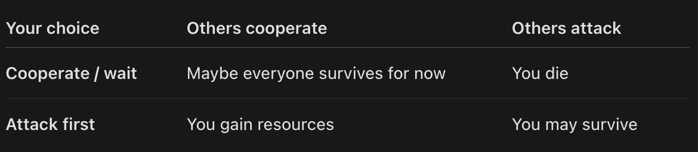
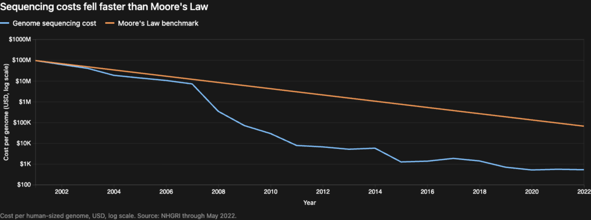

The Dark Forest: How Technology Compounds
I just finished The Dark Forest, the second book in the three-book series Remembrance of Earth's Past. It started really slowly and was a complete slog to read through, but the second half of the story eventually paid off.
The Dark Forest
SPOILERS AHEAD
In the second half of the story, the main protagonist, Luo Ji, wakes up nearly 200 years in the future. This future is completely different from what he had expected. Many things that started in the present day eventually evolved into something completely unrecognizable.
This phenomenon really spoke to me. It made me reflect on how day-to-day life feels extremely slow and uneventful, but things compound. When you zoom out and think on a higher level, things actually compound pretty fast. This whole concept was one of the plot devices in the series. The Trisolarans noticed how quickly humankind's technology evolves, so they sent sophons to disrupt advancements in fundamental physics.
The author did a really good job of showing the contrast between someone from the past encountering these advancements and those who grew up in the future. Day by day, we take one step at a time, but over an extended period these steps accumulate and become huge advancements.
Even with the sophons disrupting progress in fundamental physics, humans were still able to advance to a level unrecognizable to Luo Ji. He awoke to an underground world where every structure was a tree. There were flying bikes, screens everywhere, electronic clothing, robots, spaceships, radically improved medicine, civilizations in space, and travel at one-tenth the speed of light. At this point, humanity was extremely confident that it would defeat the Trisolarans. In the end, however, human civilization was overconfident in its abilities. All of its ships and weapons were destroyed within minutes by a single Trisolaran teardrop-shaped probe.
What actually prevented the Trisolarans from taking over and defeating humanity was Luo Ji's dark forest theory. He believed that the universe was crowded with civilizations, but that they were all hunters in a dark forest, and those that revealed themselves would eventually be destroyed.
Dark Forest Game Theory
The dark forest theory prevents civilizations from revealing themselves because once their position and existence are known, other civilizations could destroy them before they advance into a more dominant hunter. The theory assumes not only that civilizations may be hostile toward one another, but also that they can never be certain of each other's intentions. Even if a civilization is benevolent, it only takes one non-benevolent civilization to begin destroying others. Therefore, all hunters hide in the dark forest and destroy anyone who reveals themselves first.
The payoff matrix is essentially:

Being the benevolent, cooperative player has the worst possible payoff: death.
AI's Current Trajectory
I believe we are experiencing many forks in our civilization's progress. Technologies are compounding and beginning to merge. Because of this, we are seeing rapid advancements in biotechnology, AI, math, science, and more. This makes me incredibly excited to wake up every day. I get to read news like the successful Phase 3 trial of Moderna and Merck's personalized mRNA cancer therapy. I get to use new tools every week built around new harnesses and models. And I get to have hope for what the future might become in 5, 10, 30, or 50 years.
Moderna's Personalized Cancer Vaccine
On August 19, 2026, Moderna and Merck released positive topline results from a Phase 3 trial of their personalized mRNA cancer therapy for melanoma. The trial met its primary endpoint of recurrence-free survival and a key secondary endpoint of distant metastasis-free survival. The companies said the improvements were statistically significant and clinically meaningful, but they have not released the numerical Phase 3 results yet. The roughly 60% figure comes from an earlier Phase 2b trial, which reported a 59% reduction in the risk of distant metastasis or death. Many people on Twitter and in the AI/tech bubble started highlighting the use of AI in this platform and how AI is already benefiting us and helping us make progress against cancer.
One of the funnier posts I've seen in a while.
As I scrolled through the zeitgeist, I noticed two ends of the spectrum. On one end was extreme optimism: more data centers, more funding, and bullishness on AI, technology, and humanity. On the other was extreme skepticism: people pointing out that these were not LLMs or the current frontier-lab version of AI, along with broader mistrust and pessimism. Of course, I lean toward the optimistic side, but as I read the other side I tried to empathize and understand.
Some skeptics believed that the optimists were trying to pump and overvalue the current AI hype, and their criticism extended to capitalism and technology more broadly. This was interesting because there were also a lot of smart PhDs on this side of the spectrum. I personally think they were focused on the wrong things. It felt as if they were arguing about semantics when, in the end, this was a huge step—or at least progress toward an amazing future that might resemble the world after the 200-year time skip in The Dark Forest.
This was especially frustrating for me because I had just finished reading that book and was thinking heavily about how every step in progress can eventually lead to massive compounding. This is how we might reach a multiplanetary civilization where we double our lifespans, cure most diseases, and live happier, better lives. And yet some people were denying that possibility and picking at the semantics of what was actually AI and what was not.
The skeptics may be right about what the technology is today while still underestimating what this combination of technologies makes possible tomorrow. They are focused on the present game—the current node—without recognizing that life is a network of interconnected repeated games. The results of this round will change humanity's position on the board and its trajectory into the future.
In my last blog post, I wrote about this idea at the individual level. Reading The Dark Forest alongside recent technological breakthroughs made me realize that civilization works the same way. Each advancement becomes another node in the graph, and breakthroughs emerge when enough of those nodes connect.
How Breakthroughs Emerge
One thing the skeptics did have right, though, was that this was not primarily an AI win. It was a combination of many wins: next-generation tumor sequencing, mRNA technology, bioinformatics and computational biology, computational neoantigen selection, and checkpoint inhibitors. Beneath those advances sit cheaper data storage and compute, along with larger biological datasets. Without improvements and falling costs across all of these technologies, breakthroughs like this could not emerge. No single node created the result; the breakthrough emerged from the way the nodes connected.
For decades, Moore's Law translated into roughly exponential growth in affordable computation. Initially, that gave us better calculators and computers. But after enough doublings, you don't simply get a "10,000× better calculator."
You get:
PCs → internet-scale computing → smartphones → cloud computing → deep learning → foundation models → increasingly autonomous science.
The same thing happened with DNA sequencing. Beginning around 2008, sequencing costs fell dramatically faster than the pace predicted by Moore's Law.

From there, we saw:
$100 million-scale genomes → $1 million genomes → $1,000 genomes → routine patient sequencing → massive genomic datasets → AI-driven mutation interpretation → patient-specific therapy design → programmable personalized medicine.
When I worked in biotech, this graph was frequently shown alongside Moore's Law. I remember thinking about how amazing it would be if biotechnology advanced far enough that we could program biology the way we program technology. Today's oncology may eventually look extremely primitive by comparison—more like using a hammer than a precision drill.
Forks in the Road
I believe we are now seeing our civilization fork into different possibilities. On August 19, 2026, Bill Ackman and Neri Oxman announced the Ackman Oxman Institute, a nonprofit focused on brain research, rehabilitation, recovery, human optimization, and longevity, after Ackman's daughter suffered a brain hemorrhage. Her situation was devastating, but it inspired an ambitious response backed by extraordinary resources. Their initial gift of roughly $400 million created a new fork in the road.
The institute itself becomes another node, connecting capital, neuroscience, computation, and personal motivation.
When tragedy strikes, people sometimes respond by building institutions that push humanity forward. The Trisolaran threat did this to humanity in The Dark Forest. I believe the Ackman Oxman Institute could also push us forward in combination with all the technological advances we are already witnessing. The same kind of biotechnological flywheel is visible in Moderna and Merck's work:
patient → tumor sequencing → mutation identification → neoantigen prediction → individualized therapy → immune response and outcomes → more biological data → improved prediction → next patient
These flywheels are strengthened by falling costs across computation, genome sequencing, AI inference, energy, and other technologies.
I also hope to wake up one day in disbelief at how far humanity has come.
The Dark Forest: 4/5
Subscribe
Get new posts by email.